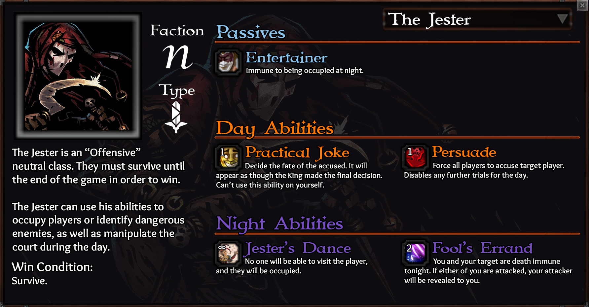

Made this for fun, don’t take this too seriously, but I tried to balance him fairly:

Skill finer details:
- Jester is immune to convert
- You can’t use Jester’s Dance on yourself or the King
- You can’t use Persuade on the King
- Fool’s Errand reveals the attacker to the person being attacked only
- Fool’s Errand does not protect against attacks that bypass death immunity, but will still reveal attackers
Why would this class be good for the game?
- Adding another Neutral that can benefit the BD will make them think twice before executing neutrals
- Neutral Killers are all occupy immune, making them easy to identify. Adding a beneficial neutral, occupy immune neutral indirectly helps neutral killers by giving them another alibi
- There are currently no offensive neutral classes in the game, why not make one?
FAQ
Isn’t a Jester and Fool the same thing?
Sort of, but I view it like this- the fool is more of a buffoon, the Jester is more of a medieval entertainer. Yes, they’re sort of similar lose-wise, but don’t get caught up in it.
Isn’t his infinite use ability a bit too strong?
It’s intentionally quite strong because he doesn’t really have a lot of great ways to survive. Unlike Alchemist he can’t go death immune 4 times- only twice.
Why would the BD want this guy alive?
Mostly, they would want him alive because Fool’s Errand helps him identify threats, and the Jester and the BD both are incentivized to neutralize killers, so they have that in common. The Jester can also help the BD using his day abilities if he so chooses. Also, he’s convert immune class, which instantly gives him value to the BD.
So, what do you think? Would you find this fun to play or not?